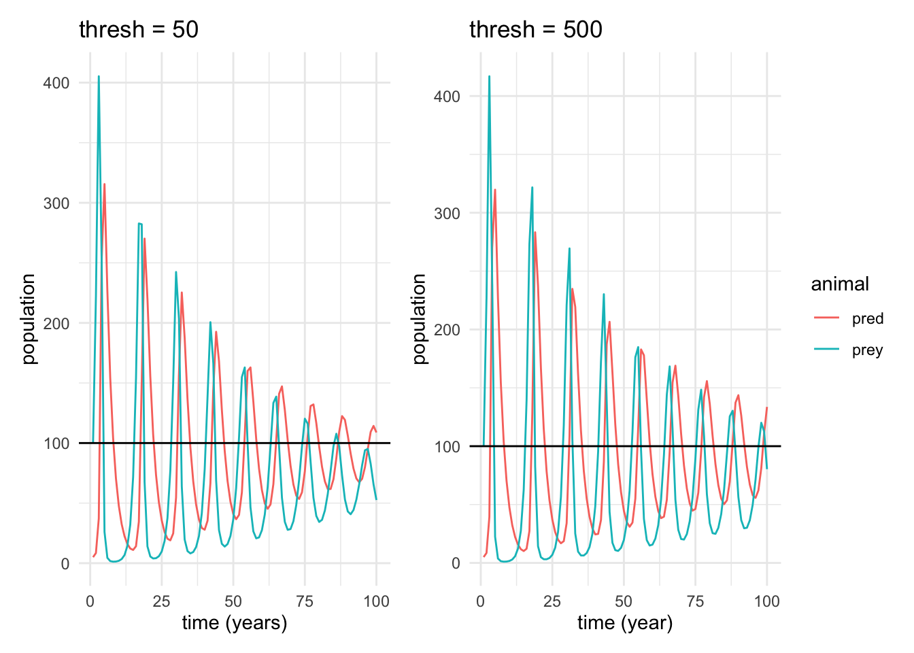
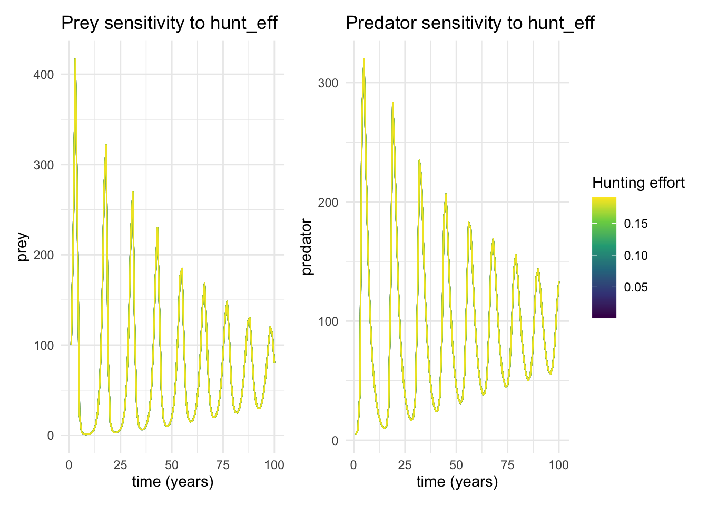

library(here)
library(deSolve)
library(tidyverse)
library(patchwork)
source(here("R/lotvmod_hunt.R"))
# set initial conditions
currpop <- c(prey = 100, pred = 5)
# time points
days <- seq(from = 1, to = 100, by = 1)
## Hunting is immediately active
# set parameters
pars <- c(rprey = 0.95, alpha = 0.01, eff = 0.6, pmort = 0.4, K = 2000,
hunt_eff = 0.02, thresh = 50) # hunting removes 1% of prey population
# run model
res_50 <- ode(func = lotvmod_hunt, y = currpop, times = days, parms = pars)
resl_50 <- as.data.frame(res_50) %>% pivot_longer(-time, names_to = "animal", values_to = "pop")
p1 <- ggplot(resl_50, aes(time, pop, col = animal)) +
labs(title = "thresh = 50",
y = "population",
x = "time (years)") +
geom_line() +
geom_hline(yintercept = 100) +
theme_minimal()
## Hunting is not immediately active
# set parameters with threshold = 0 (or no threshold)
pars <- c(rprey = 0.95, alpha = 0.01, eff = 0.6, pmort = 0.4, K = 2000,
hunt_eff = 0.01, thresh = 500) # hunting removes 1% of prey population
# run model
res_500 <- ode(func = lotvmod_hunt, y = currpop, times = days, parms = pars)
resl_500 <- as.data.frame(res_500) %>% pivot_longer(-time, names_to = "animal", values_to = "pop")
p2 <- ggplot(resl_500, aes(time, pop, col = animal)) +
labs(title = "thresh = 500",
y = "population",
x = "time (year)") +
geom_line() +
geom_hline(yintercept = 100) +
theme_minimal()Assignment 7 - Two Variables ODE
Assignment Instructions
Consider how you might add hunting of prey to the predator prey model that we’ve been using in class
Part 1:
Build this model (e.g add hunting to the lotvmodK.R),
Some requirements/hints for your model
You should make sure that you don’t hunt more prey than exist.
To ensure that you might also add a minimum prey population input that must be met before hunting is allowed.
Note you can make this as simple or as complex as you would like. You could represent hunting in a way that is similar to “harvesting” in the last assignment - or you could make hunting an exogenous process - so a time based input to your model
Part 2
Explore how different hunting levels and uncertainty/variation in parameters in your model are likely to effect the stability of the populations of both predator and prey. A key challenge is how you might want to define stability? It is up to you but you will need to write a sentence to explain why you chose the measure that you did. It could be something as simple as maintaining a population above some value 50 years into the future.
Use this exploration to recommend a hunting target that will be sustainable (e.g leave you with a stable prey and predator population).
It is up to you how you “explore” hunting - you can simply try different values of the parameters in your hunting model or do it more formally by running your model across a range of values. You could think about parameter interactions
You can assume the following are best guesses of key parameters
rprey=0.95, alpha=0.01, eff=0.6,pmort=0.4, K=2000,
Initial model (also see lotvmod_hunt.R)
The function/model with the addition of hunting can be found in the corresponding R file, but it essentially subtracts hunting rate * prey (the amount of prey hunted) from the prey population, with an if else statement controlling whether hunting occurs based on whether a prey population threshold is set.
Testing stability based on threshold values
In the plots below, the horizontal line represents our stability condition (in this case, current prey population = 100).
p1 + p2 +
plot_layout(guides = "collect")
Stable population definition: If in 90 to 100 years, the maximum prey population in that time range is more than the starting population, than the prey and predator populations are stable.
I chose this metric 1) because the prey population is also representative of the predator population, 2) a time range is more representative of a population than a single year, since the populations are cyclical, and 3) 90-100 years in the future, if simulated regularly, could be enough to make any changes to legislation that could fix negative effects far enough in advance for the change to be impactful.
# assign current/starting population value
currpop_stable <- 100
stable <- function(res){
# filter results data frame to time and animal of interest
val <- res %>%
filter(time >= 90, time <= 100, animal == "prey") %>%
pull(pop) %>%
max()
# print stability results based on population metric
if (val > currpop_stable) {
return("Stability condition met")
} else {
return("Stability condition not met")
}
}Our three test cases will be a threshold of 50, 350, and 500. Here we test our stability metric on all three.
# running threshold = 350
pars <- c(rprey = 0.95, alpha = 0.01, eff = 0.6, pmort = 0.4, K = 2000,
hunt_eff = 0.01, thresh = 350) # hunting removes 1% of prey population
res_350 <- ode(func = lotvmod_hunt, y = currpop, times = days, parms = pars)
resl_350 <- as.data.frame(res_500) %>% pivot_longer(-time, names_to = "animal", values_to = "pop")
met_50 <- stable(res = resl_50)
met_350 <- stable(res = resl_350)
met_500 <- stable(res = resl_500)
print(paste("When the population threshold is 50, ", met_50))[1] "When the population threshold is 50, Stability condition not met"print(paste("When the population threshold is 350, ", met_350))[1] "When the population threshold is 350, Stability condition met"print(paste("When the population threshold is 500, ", met_500))[1] "When the population threshold is 500, Stability condition met"From these results, we can see that with threshold values of 350 and 500, our population will be stable according to our definition. For a threshold of 50 (representing hunting beginning immediately), the prey population would not be stable.
Based on different values of this threshold, we can conclude that hunting legislation should not allow hunting of the prey population if it is less than 350 (more granular analysis would have to be run for more accurate results).
Testing stability based on hunting values (hunt_eff)
# set initial conditions
currpop <- c(prey = 100, pred = 5)
# time points
days <- seq(from = 1, to = 100, by = 1)
## Low hunting effort
# set parameters
pars <- c(rprey = 0.95, alpha = 0.01, eff = 0.6, pmort = 0.4, K = 2000,
hunt_eff = 0.005, thresh = 50) # hunting removes 1% of prey population
# run model
res_1 <- ode(func = lotvmod_hunt, y = currpop, times = days, parms = pars)
resl_1 <- as.data.frame(res_1) %>% pivot_longer(-time, names_to = "animal", values_to = "pop")
# Medium hunting effort
# set parameters
pars <- c(rprey = 0.95, alpha = 0.01, eff = 0.6, pmort = 0.4, K = 2000,
hunt_eff = 0.01, thresh = 50) # hunting removes 1% of prey population
# run model
res_2 <- ode(func = lotvmod_hunt, y = currpop, times = days, parms = pars)
resl_2 <- as.data.frame(res_2) %>% pivot_longer(-time, names_to = "animal", values_to = "pop")
## Higt hunting effort
# set parameters with threshold = 0 (or no threshold)
pars <- c(rprey = 0.95, alpha = 0.01, eff = 0.6, pmort = 0.4, K = 2000,
hunt_eff = 0.1, thresh = 500) # hunting removes 1% of prey population
# run model
res_3 <- ode(func = lotvmod_hunt, y = currpop, times = days, parms = pars)
resl_3 <- as.data.frame(res_3) %>% pivot_longer(-time, names_to = "animal", values_to = "pop")# Stabililty test
print(paste("When the hunting effort is low (0.005), ", stable(res = resl_1)))[1] "When the hunting effort is low (0.005), Stability condition met"print(paste("When the hunting effort is medium (0.01), ",stable(res = resl_2)))[1] "When the hunting effort is medium (0.01), Stability condition met"print(paste("When the hunting effort is high (0.1), ", stable(res = resl_3)))[1] "When the hunting effort is high (0.1), Stability condition met"Hunting effort doesn’t seem to have a large effect on population stability, based on our definition of stability.
From our results, we can assume that legislation should place more effort on limiting when hunting can begin in the season (at what prey population), rather than the hunting effort itself. Higher hunting efforts can be simulated to see effects.
Running informal sensitivity analysis on hunt_eff
currpop <- c(prey = 100, pred = 5)
# create range of hunting effort values
hunt_vals <- seq(0.001, 0.2, by = 0.01)
# create a function that
sens_results <- map_dfr(hunt_vals, function(h) {
p <- pars
pars["hunt_eff"] <- h
ode(func = lotvmod_hunt, y = currpop, times = days, parms = p) |>
as.data.frame() |>
mutate(hunt_eff = h)
})
prey <- ggplot(sens_results, aes(x = time, y = prey, color = hunt_eff, group = hunt_eff)) +
geom_line(alpha = 0.7) +
scale_color_viridis_c() +
labs(title = "Prey sensitivity to hunt_eff",
color = "Hunting effort",
x = "time (years)") +
theme_minimal()
pred <- ggplot(sens_results, aes(x = time, y = pred, color = hunt_eff, group = hunt_eff)) +
geom_line(alpha = 0.7) +
scale_color_viridis_c() +
labs(title = "Predator sensitivity to hunt_eff",
y = "predator",
color = "Hunting effort",
x = "time (years)") +
theme_minimal()
prey + pred +
plot_layout(guides = "collect")
This sensitivity further confirms that hunting effort only varies prey and predator populations slightly, with lower efforts corresponding to larger populations on average.
Running Sobol to test parameter sensitivity
Attempt on one parameter set
library(sensitivity)
hunt_wrapper <- function(rprey, alpha, eff, pmort, K, hunt_eff, thresh, currpop, days, odefunc, metricfunc) {
params <- list(rprey = rprey, alpha = alpha, eff = eff, pmort = pmort,
K = K, hunt_eff = hunt_eff, thresh = thresh)
result <- ode(func = odefunc, y = currpop, times = days, parms = params, maxsteps = 50000) |>
as.data.frame() # columns will be: time, prey, pred
return(metricfunc(result))
}
compute_growth_metric <- function(result) {
list(max_prey = max(result$prey),
min_prey = min(result$prey),
max_pred = max(result$pred),
min_pred = min(result$pred))
}hunt_wrapper(rprey=0.95, alpha=0.01, eff=0.6,pmort=0.4, K=2000, hunt_eff = 0.1, thresh = 50, currpop = currpop, days = days,
odefunc = lotvmod_hunt, metricfunc = compute_growth_metric)DLSODA- At current T (=R1), MXSTEP (=I1) steps
taken on this call before reaching TOUT
In above message, I1 = 50000
In above message, R1 = 55.8656
$max_prey
[1] 360.21
$min_prey
[1] 2.434881
$max_pred
[1] 293.5072
$min_pred
[1] 5Attempting sobol on a range of parameters (assuming rprey, K, and pmort stay the same) fails due to large number of variable – would require more tuning.
# set number of parameters
np <- 2000
# create first set of normal distributions of parameters
rprey <- rnorm(mean = 0.95, sd = 0.95 * 0.01, n = np)
alpha <- rnorm(mean = 0.01, sd = 0.01 * 0.01, n = np)
eff = rnorm(mean = 0.06, sd = 0.6 * 0.01, n = np)
pmort = rnorm(mean = 0.4, sd = 0.4 * 0.01, n = np)
K = rnorm(mean = 2000, sd = 2000 * 0.01, n = np)
hunt_eff <- rnorm(0.1, sd = 0.1 * 0.1, n = np)
thresh = rnorm(100, sd = 0.1 * 100, n = np)
x1 <- cbind.data.frame(rprey = rprey, alpha = alpha, eff = eff, pmort = pmort,
K = K, hunt_eff = hunt_eff, thresh = thresh)
# create second set of normal distributions
rprey <- rnorm(mean = 0.95, sd = 0.95 * 0.01, n = np)
alpha <- rnorm(mean = 0.01, sd = 0.01 * 0.01, n = np)
eff = rnorm(mean = 0.06, sd = 0.6 * 0.01, n = np)
pmort = rnorm(mean = 0.4, sd = 0.4 * 0.01, n = np)
K = rnorm(mean = 2000, sd = 2000 * 0.01, n = np)
hunt_eff <- rnorm(0.1, sd = 0.1 * 0.1, n = np)
thresh = rnorm(100, sd = 0.1 * 100, n = np)
x2 <- cbind.data.frame(rprey = rprey, alpha = alpha, eff = eff, pmort = pmort,
K = K, hunt_eff = hunt_eff, thresh = thresh)
# fix any negative values and they are not meaningful
# the pmax function makes any values that are negative 0
x1 <- x1 %>% map_df(pmax, 0.0)
x2 <- x2 %>% map_df(pmax, 0.0)
# create Sobol object and get the parameter set we will be running the model on
sens_hunt <- sobolSalt(model = NULL, x1, x2, nboot = 300)
# assign proper column names for interpretability
colnames(sens_hunt$X) <- c("rprey", "alpha", "eff", "pmort",
"K", "hunt_eff", "thresh")
# view parameter set
head(sens_hunt$X) rprey alpha eff pmort K hunt_eff thresh
[1,] 0.9581569 0.010070862 0.06152948 0.4012503 2048.981 0.10127005 92.45195
[2,] 0.9356235 0.010203176 0.05694129 0.3975649 1973.918 0.10026824 110.82291
[3,] 0.9591920 0.009918342 0.05928163 0.3925813 1984.493 0.09780818 100.96145
[4,] 0.9502841 0.009999327 0.05477371 0.3955698 2021.123 0.09318894 109.40361
[5,] 0.9637556 0.010107627 0.05511733 0.3963096 2005.670 0.09889430 110.61276
[6,] 0.9427733 0.010009522 0.05698884 0.3960085 1988.346 0.09578820 98.25939# runs in an endless loop, unfortunately
allresults <- as.data.frame(sens_hunt$X) %>%
pmap(hunt_wrapper, currpop = currpop, days = days,
odefunc = lotvmod_hunt, metricfunc = compute_growth_metric)